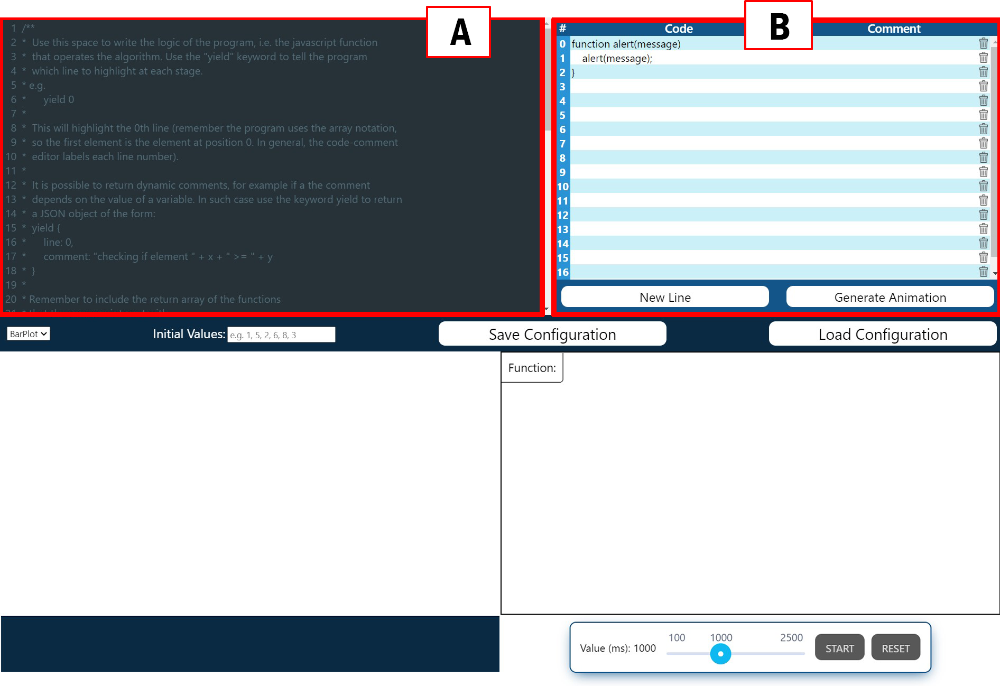
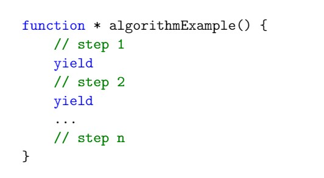
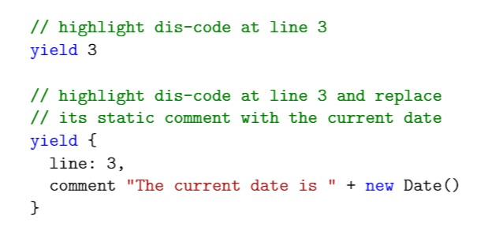
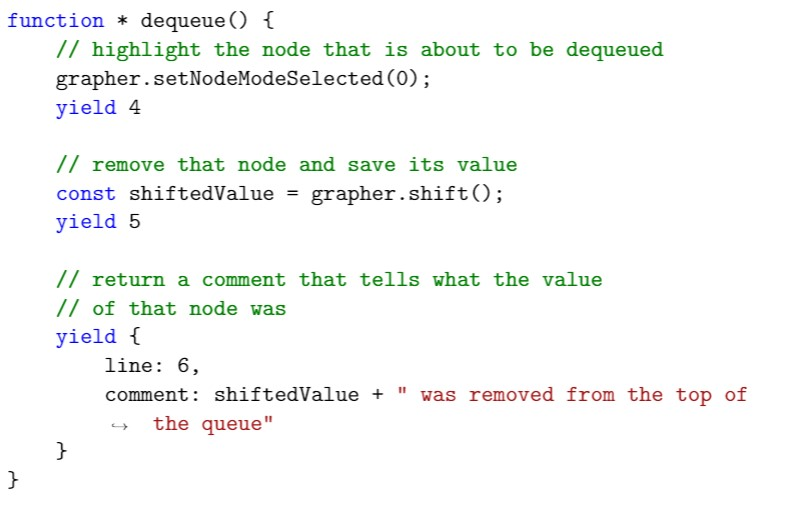
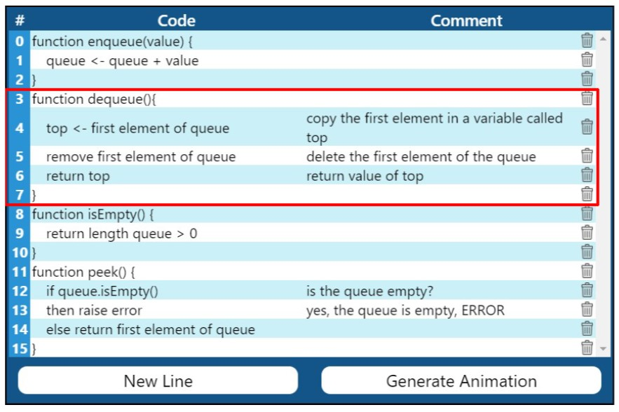
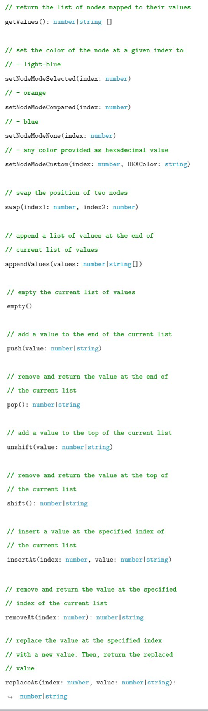

What is Grapher.js
Grapher.js is a website designed to help students
learn data structures and algorithms via interactive
function calls and beautiful animations.
Instructions for students
Your teacher should have provided you with a configuration file in format JSON.
That file should be used in the Animation Page to generate the animation.
To load a configuration you just need to click on the button Choose File and select the file provided to you by your teacher. Once the configuration is loaded and accepted by the software, the animation will automatically appear on your screen.
If your teacher did not provide any files, you can play around with one of those pre-built into Grapher.js. Again, go the Animation Page, but this time select a file from the drop-down menu. When you have chose the animation, click the button Confirm and the animation will appear.
To interact with the animation, move to the next section Understanding the components which explains what each component does.
To load a configuration you just need to click on the button Choose File and select the file provided to you by your teacher. Once the configuration is loaded and accepted by the software, the animation will automatically appear on your screen.
If your teacher did not provide any files, you can play around with one of those pre-built into Grapher.js. Again, go the Animation Page, but this time select a file from the drop-down menu. When you have chose the animation, click the button Confirm and the animation will appear.
To interact with the animation, move to the next section Understanding the components which explains what each component does.
Understanding the components
Once the animation has been loaded successfully, you should see something similar to this
 Two elements are fundamental to understand. The element with the label 1 is the bar with the
methods that you can call to interact with the animation. Some may need you to pass some parameters,
such as Enqueue. For these types of methods the input shall be valid in order for the method
to be callable. All the other methods may be called straight away.
Two elements are fundamental to understand. The element with the label 1 is the bar with the
methods that you can call to interact with the animation. Some may need you to pass some parameters,
such as Enqueue. For these types of methods the input shall be valid in order for the method
to be callable. All the other methods may be called straight away.
Once you call a method, this will not start immediately, instead it will be loaded and will start only when you press the button START in the control panel (the element with label 2).
In the control panel you are provided the buttons to start, stop, and resume the animation. Notice that the button RESET does not replay the last method called, rather, it resets the all animation to the state it was when it was loaded. Within the control panel you also have a slider which controls the speed of the animation. The value of the slider denotes the delay between one animation step and the next one. To obtain a lower value you should drag the cursor to the left. Vice versa, dragging it to the right will slow down the animation.
The animation takes place in the box located right above the control panel. Although it is not possible to directly interact with the animation (the only way is calling methods and using the elements in the control panel), the content of the animation can be zoomed in or out using the mouse wheel. Also, the animation can be moved by dragging it.
On the left of the animation box is where the code for the animation will be displayed. The currently executed line of will be highlighted to easily find it.
Finally, the comments will appear below the code, inside that dark blue box.
Two elements are fundamental to understand. The element with the label 1 is the bar with the
methods that you can call to interact with the animation. Some may need you to pass some parameters,
such as Enqueue. For these types of methods the input shall be valid in order for the method
to be callable. All the other methods may be called straight away.
Once you call a method, this will not start immediately, instead it will be loaded and will start only when you press the button START in the control panel (the element with label 2).
In the control panel you are provided the buttons to start, stop, and resume the animation. Notice that the button RESET does not replay the last method called, rather, it resets the all animation to the state it was when it was loaded. Within the control panel you also have a slider which controls the speed of the animation. The value of the slider denotes the delay between one animation step and the next one. To obtain a lower value you should drag the cursor to the left. Vice versa, dragging it to the right will slow down the animation.
The animation takes place in the box located right above the control panel. Although it is not possible to directly interact with the animation (the only way is calling methods and using the elements in the control panel), the content of the animation can be zoomed in or out using the mouse wheel. Also, the animation can be moved by dragging it.
On the left of the animation box is where the code for the animation will be displayed. The currently executed line of will be highlighted to easily find it.
Finally, the comments will appear below the code, inside that dark blue box.
Instructions for teachers
The generator page is partly similar to the animation page. However, the component to select the
configuration is replaced by a more complex component, namely, the teacher component.
This component should be used to create models in all their aspects.
The following figure shows its components.
 Component A is a text editor that should be used to define the behaviour of the algorithms and how the respective animations should update. The language to use for this section is Javascript. Component B is the code-comment container. It includes several lines, each made up of a portion of displayable code and a static comment. Each line is indexed by a number located on the left-hand side of the code section under the column label with a hash symbol (#). At the bottom of the teacher component, there is a horizontal bar. The elements of this bar, in order, allow to:
- Select the type of data structure to use.
- Select initial values that the model should start with and the animator should immediately render these values.
- Save the current model defined in the teacher section and export it as a configuration file.
- Load a model to modify it by selecting an existing configuration.
To create a model, it is important to define its elements. In the code-comment container, it is possible to define the displayable code and the comments that should be displayed during an animation. As this code is not actually run, it can be written using any languages, may that be Python, Haskell, or even pseudocode.
If the lines to write displayable code and comments terminate, it is enough to click on the 'new line' button to generate more. Vice versa, clicking the bin image on the right-hand side a line deletes the latter.
Inside the text editor, Javascript should be used to model the animations. This Javascript code will also be referred to as animation code. In the animation code, the methods that describe the algorithms (and the respective animations) should be defined. Note that these methods must be generator functions in order to work properly.
Algorithms, in fact, should be a sequence of well-defined steps and, using the 'yield' keyword, it is possible to delimit these steps. An example for this is:

The yield construct allows to return some data. In the animation code, that data should be used to tell the software what line of displayable code (as defined in the code-comment container) should be highlighted and what comment should be displayed at each step. The yield construct should return either a number, which is simply the index of such a line, or a JSON.
Using the JSON notation, the construct can specify the line of displayable to highlight as well as a comment (generated at runtime) that overrides the static comment defined in the code-comment container for that line. Following is an example:

The generator functions that describe the steps for an algorithm should also be used to create the animations. Suppose that the Javascript code should model a queue data structure. That model should contain some data (i.e. the elements stored in the queue) that Animalgo should graphically render. To be precise, the graphical representation of each element stored in the queue is called 'node'.
To visually simulate an algorithm, each generator function should tell Animalgo how to manipulate these nodes at every step of the algorithm that such a function represents. This can be easily done using the 'grapher' object which can be called from the Javascript code.
The grapher object is what contains the data of the model (the queue in the previous example). Interacting with it, it is possible to read and alter this data.
The grapher object should detect the changes on this data and communicates it to the animator which updates the nodes correctly. To guarantee that the grapher object detects these changes, it is important to manipulate the data it stores using the exposed methods. The full list of methods exposed by the grapher instance is listed at the bottom. An example of possible animation code for the 'dequeue' method of a queue model is reported as follows. That code refers to the code-comment container in adjacent figure.
 
Each generator function defined in the text editor has access to a grapher object which should be used to manipulate graphical nodes to simulate animations. This object exposes the following methods:
